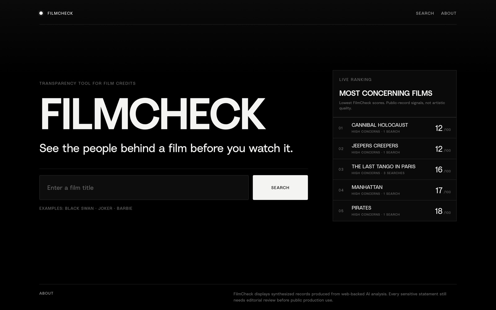
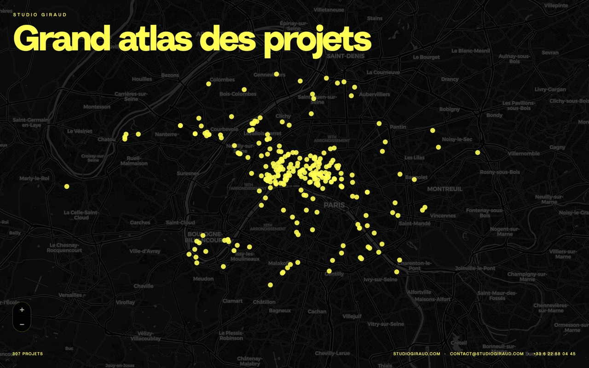
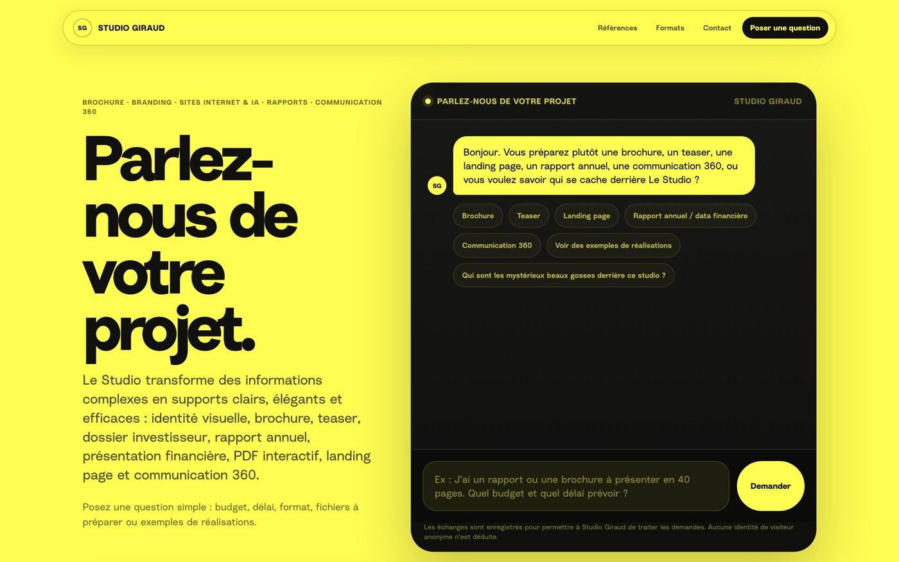
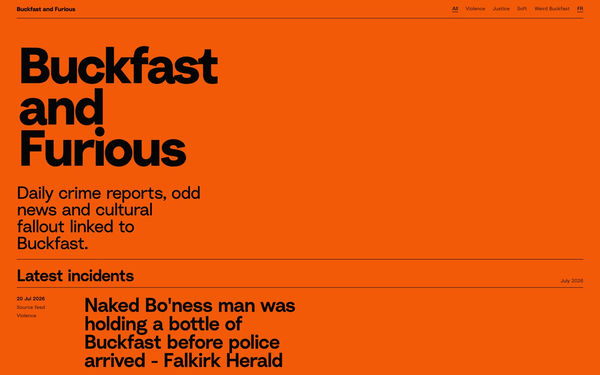

Portfolio · Candidature formation IA
Hello et bienvenue sur mon portfolio.
Graphiste dans les univers corporate (immobilier, finance), l'intelligence artificielle m'apporte une nouvelle façon de créer : en combinant analyse, structure et langage. L'IA, l'extension créative que je cherchais.
Profil
Designer graphique et chef d'entreprise, je me suis récemment passionné pour les possibilités offertes par l'intelligence artificielle. Sans formation de développeur, j'apprends en expérimentant, en partant de besoins concrets et en construisant mes propres outils.
J'ai déjà créé plusieurs projets intégrant l'IA : une carte interactive de mes réalisations, un site d'évaluation éthique des films et une veille automatisée sur les faits divers liés à une boisson écossaise. Ces expériences me donnent aujourd'hui envie d'approfondir mes compétences grâce à une formation en IA. Mais écrire mes textes moi même, sans IA. Ou juste un peu.
Outils & environnements de travail
Je conçois des produits numériques et pilote leur développement avec des outils de création, des plateformes web et des agents IA.
Adobe Creative Cloud
InDesign, Illustrator et Photoshop pour la direction artistique, l'identité visuelle et le design éditorial.
Claude Code
Développement, correction et évolution de projets web assistés par IA.
OpenAI Codex
Modification de code, résolution de problèmes techniques et évolution des fonctionnalités.
ChatGPT · Claude
Recherche, conception fonctionnelle, rédaction, structuration des données et prototypage.
GitHub
Gestion des fichiers, suivi des versions et publication des projets.
Vercel
Mise en ligne, déploiement et gestion des applications web.
Supabase
Gestion des bases de données et des contenus utilisés par certains projets.
Terminal
Ligne de commande, utilisée notamment pour automatiser des tâches et des scripts.
Figma Weave
Workflows de design assistés par IA : conception et prototypage d'interfaces.
Projets
FilmCheck

Avant de lancer un film, jetez un œil aux casseroles de ceux qui l'ont fait. FilmCheck passe l'équipe créditée au crible et remonte les controverses et affaires judiciaires connues.
Sous le capot, tout est serverless : l'appli regarde d'abord si le film est déjà en cache Supabase, sinon une IA analyse et range les crédits avant de les sauvegarder. Comme ça, jamais deux fois le même calcul.
Atlas Giraud

Une carte interactive qui rassemble tous les projets immobiliers sur lesquels j'ai travaillé : plus de 300, chacun posé sur la carte et documenté.
Le plus satisfaisant : rien n'est ressaisi à la main. Une IA de vision lit directement les brochures PDF (la mise en page, pas juste le texte) et en sort le nom, l'adresse, la ville et le type d'actif.
Portfolio + Assistant IA de brief

Dans le cadre de mon activité de designer graphique, j'ai imaginé un assistant conversationnel pour simplifier le premier contact client. Il qualifie une demande souvent vague, estime un budget et un délai, puis génère un brief structuré directement exploitable par l'agence.
La première version fonctionne dans le navigateur en HTML, CSS et JavaScript, avec un moteur de règles qui adapte les questions et construit le brief en temps réel. L'évolution prévue consiste à intégrer un agent IA via Vercel et OpenAI, capable de mieux comprendre le contexte métier et de repérer les informations manquantes.
Ce projet explore l'IA comme un nouveau point de contact entre une entreprise et ses clients.
Buckfast and Furious

Le Buckfast, c'est un vin tonique écossais, sucré et bien caféiné, à ce point associé aux soirées qui dérapent qu'il alimente à lui seul une rubrique entière de faits divers. Ce site les collectionne chaque jour : résumé, catégorie et lien vers l'article d'origine.
Et le tout sans serveur, sans base de données, sans API. Une veille Google Alerts nourrit un flux RSS que GitHub Actions transforme et publie en pages statiques.